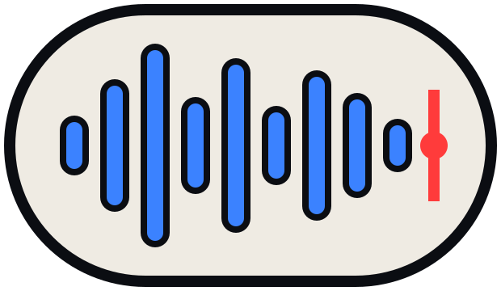

Mixer
Volume, pan, mudo e solo por trilha; automação com keyframes.
Mixer por trilha, espectro em tempo real, medidor de loudness e limpeza de voz. Normaliza em LUFS na exportação. Grátis no Lite.

Voz limpa e volume certo para cada rede. Sem romper o fluxo do projeto.

Volume, pan, mudo e solo por trilha; automação com keyframes.
Redução de ruído, gate e de-esser para voz.
Medidor LUFS integrado: -14 para YouTube e redes, -16 para podcast.
Analisador em tempo real para achar ruído e ressonância.
EQ paramétrico e compressor com presets de voz e música.
MP3, WAV e AAC, ou junto com o vídeo.
Cada trilha com volume, pan, mudo e solo; keyframes na mesma lógica do vídeo.
Corte, fade, ganho e efeitos direto no arquivo, com desfazer.

Veja onde está o ruído e quanto falta para o volume da plataforma.

Sim, com monitoramento e contagem regressiva.
Redução de ruído por perfil e gate; para voz, o de-esser ajuda com os "s".
Sim, completo.
Crie uma conta, baixe o Lite e edite o primeiro projeto em minutos. O PRO fica a uma chave de distância.
Windows 10 ou 11 · 64 bits · instalador de 118 MB
Feito para publicar. Cinco ferramentas, um arquivo, nenhuma troca de contexto.

Carregando comentários…